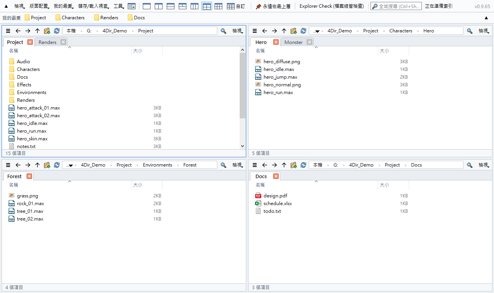
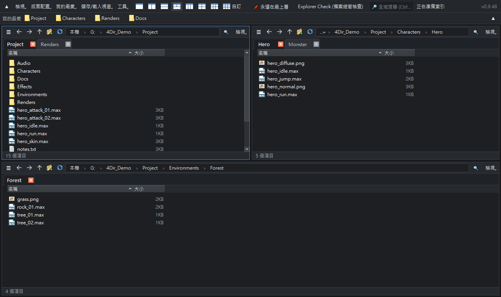

最多 20 個窗格。每個窗格都有分頁。輕巧不吃資源。
適用於 Windows 10/11 的免費檔案管理員。免安裝，解壓縮即可使用。
Windows 10/11 64 位元 · 33 MB · 2026-10-21 · 免費

功能
最多 20 個窗格
一鍵切換 1、2、3、4、6 窗格配置，或自訂最多 5 × 4 的格狀配置。每個窗格都有獨立分頁。
不拖慢電腦
直接讀取資料夾，不使用笨重的 Windows Shell 檢視。閒置時沒有計時器與輪詢——可放心與 3ds Max、遊戲等大型程式同時開著。
即時搜尋
輸入即可搜尋所有磁碟上的檔名。自有索引即時更新，不需要系統管理員權限。
SVN 狀態一目了然
直接讀取 .svn 顯示修改/新增/衝突標記，內部有變更的資料夾顯示為紅色。Git、Perforce 透過 Windows 覆疊圖示顯示。
操作就像檔案總管
相同的快速鍵、完整的 Windows 右鍵選單，可與檔案總管及其他程式互相拖放。
免安裝且重視隱私
設定只存在 4Dir 資料夾內。內建淺色/深色主題、10 種語言、批次重新命名、工作階段還原與檔案總管診斷。

安裝方式
- 用上方按鈕（或 GitHub 的 Releases）下載 zip。GitHub 上綠色的「Code → Download ZIP」只有原始碼，無法直接執行。
- 在 zip 上按右鍵 → 內容 → 勾選解除封鎖 → 確定。（否則每次執行都會出現安全性警告）
- 解壓縮到任意位置，雙擊 4Dir.vbs。
如果出現 Windows SmartScreen：按其他資訊 → 仍要執行。4Dir 是新軟體，尚未進行程式碼簽章；原始碼完全公開。
驗證下載（選用）
在命令提示字元執行 certutil -hashfile 4Dir_v0.9.57.zip SHA256，結果應與下列相同：
4e58b8e5625e73fb55042af994b19cee92e50471dfe1a0331488719bcbb67a34
支持 4Dir
4Dir 免費且沒有廣告。如果它幫你省下時間，一點小小的贊助能讓更新持續下去。
常見問題
真的免費嗎？
是的。4Dir 是免費開源軟體（GPL-3.0）。沒有廣告、不需帳號、沒有試用期。
會傳送資料嗎？
不會傳送個人資料。每天只檢查一次是否有新版本（可在「工具」中關閉）。
遇到問題？
工具 → 儲存問題回報記錄，然後到 GitHub 開 issue 並附上 zip 檔。